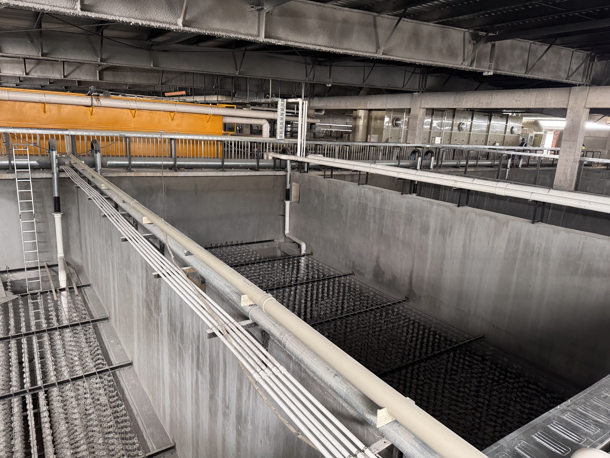

GUWEIENVIRONMENTAL
GUWEIENVIRONMENTAL4,000 m³/d
Treatment Capacity
Solutions / Livestock & Slaughterhouses
Explore livestock wastewater equipment and photographs from a 4,000 m³/d slaughterhouse wastewater project at a food processing facility in the Greater Bay Area.
01 / Project Overview
A slaughterhouse wastewater treatment project with a capacity of 4,000 m³/d. Site photographs show tank construction, equipment layouts and pipework installation.


Treatment Capacity
Wastewater Type
Complete Treatment Process
Site photographs show tanks, equipment and connecting pipes. Equipment models, supply quantities and Guwei's scope: 待确认.
Influent quality, discharge destination, treatment targets and operating parameters: 待确认.
02 / Processes & Systems
The livestock wastewater equipment description uses pretreatment + dissolved air flotation + biological treatment. The complete process and equipment sequence for this slaughterhouse project: 待确认.
Pretreatment is selected for wastewater sources and solid impurities. Project-specific parameters: 待确认.
Process units, design loads and effluent targets: 待确认.
Sludge dewatering equipment models, capacity and subsequent disposal arrangements: 待确认.
03 / Project Equipment
Equipment and configuration photographs. Select an image to enlarge.


04 / Site Implementation


1. Your production activities and the main wastewater sources.
2. Approximate daily flow and whether this is a new-build or retrofit project.
3. The issue you most want to resolve.
You can start with the information you have, even without complete drawings or test reports.
Start with project type, flow and site conditions, then discuss equipment requirements.
Online enquiries are not currently available. Please contact us by phone. +86 18026396076
Call us:+86 18026396076
Mechanical & Electrical Installation Project · Wastewater Treatment
PROJECT OVERVIEW
The wastewater treatment works form part of the mechanical and electrical installation project at the Greater Bay Area Ecological Food Processing Center. The center occupies approximately 45,600 m², with a total floor area of approximately 86,200 m².
TREATMENT PROCESS
EFFLUENT REQUIREMENTS
As specified in the supplied project design information
Table 3, Grade III (multi-process enterprises)
Second period, Grade III
Grade B
ON SITE
Select an image to view site details
RELATED PRODUCTS
CONTACT GUWEI